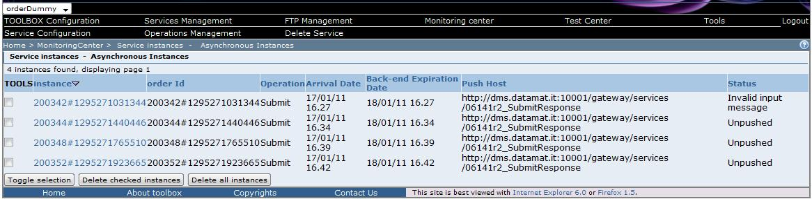

To view the list of the asynchronous instances of the selected service click on the "Display Asynchronous instances" section link in the in the "Monitoring center" page. The browser should display a table listing all the service instances

The table displayed includes the following information: